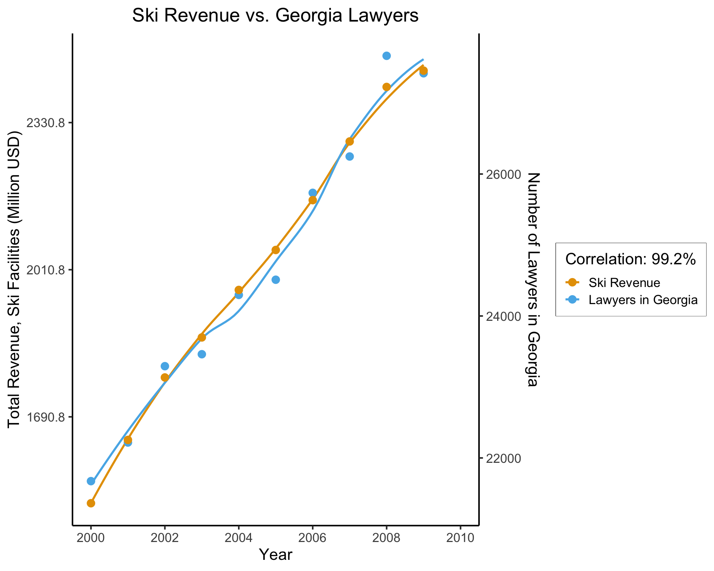
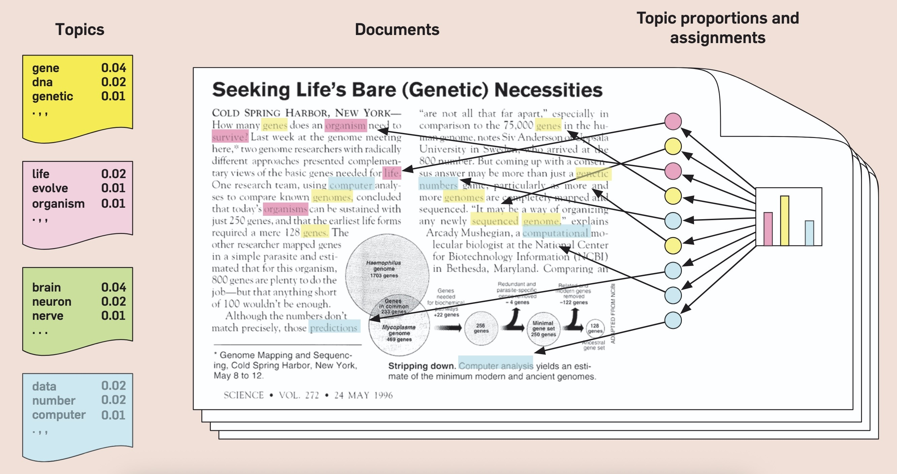

Week 2: Probabilistic Graphical Models (PGMs)
DSAN 5650: Causal Inference for Computational Social Science
Summer 2025, Georgetown University
Wednesday, May 28, 2025
Schedule
Today’s Planned Schedule:
| Start | End | Topic | |
|---|---|---|---|
| Lecture | 6:30pm | 6:45pm | TA Intros → |
| 6:45pm | 7:00pm | HW1 Questions and Concerns → | |
| 7:00pm | 7:30pm | Motivating Examples: Causal Inference → | |
| 7:30pm | 7:45pm | Your First Probabilistic Graphical Model! → | |
| Break! | 7:45pm | 8:00pm | |
| 8:00pm | 9:00pm | PGM “Lab” → |
\[ \DeclareMathOperator*{\argmax}{argmax} \DeclareMathOperator*{\argmin}{argmin} \newcommand{\bigexp}[1]{\exp\mkern-4mu\left[ #1 \right]} \newcommand{\bigexpect}[1]{\mathbb{E}\mkern-4mu \left[ #1 \right]} \newcommand{\definedas}{\overset{\small\text{def}}{=}} \newcommand{\definedalign}{\overset{\phantom{\text{defn}}}{=}} \newcommand{\eqeventual}{\overset{\text{eventually}}{=}} \newcommand{\Err}{\text{Err}} \newcommand{\expect}[1]{\mathbb{E}[#1]} \newcommand{\expectsq}[1]{\mathbb{E}^2[#1]} \newcommand{\fw}[1]{\texttt{#1}} \newcommand{\given}{\mid} \newcommand{\green}[1]{\color{green}{#1}} \newcommand{\heads}{\outcome{heads}} \newcommand{\iid}{\overset{\text{\small{iid}}}{\sim}} \newcommand{\lik}{\mathcal{L}} \newcommand{\loglik}{\ell} \DeclareMathOperator*{\maximize}{maximize} \DeclareMathOperator*{\minimize}{minimize} \newcommand{\mle}{\textsf{ML}} \newcommand{\nimplies}{\;\not\!\!\!\!\implies} \newcommand{\orange}[1]{\color{orange}{#1}} \newcommand{\outcome}[1]{\textsf{#1}} \newcommand{\param}[1]{{\color{purple} #1}} \newcommand{\pgsamplespace}{\{\green{1},\green{2},\green{3},\purp{4},\purp{5},\purp{6}\}} \newcommand{\pedge}[2]{\require{enclose}\enclose{circle}{~{#1}~} \rightarrow \; \enclose{circle}{\kern.01em {#2}~\kern.01em}} \newcommand{\pnode}[1]{\require{enclose}\enclose{circle}{~{#1}~}} \newcommand{\purp}[1]{\color{purple}{#1}} \newcommand{\sign}{\text{Sign}} \newcommand{\spacecap}{\; \cap \;} \newcommand{\spacewedge}{\; \wedge \;} \newcommand{\tails}{\outcome{tails}} \newcommand{\Var}[1]{\text{Var}[#1]} \newcommand{\bigVar}[1]{\text{Var}\mkern-4mu \left[ #1 \right]} \]
TA Intros
Courtney Green
Background: BA in Public Policy & Leadership, now interested in using data to examine structural disparities.
Interests & what I can help with: How sociodemographic factors (e.g., race, gender, income, immigration status, education level) shape policy outcomes and institutional practices in areas like criminal justice, housing, healthcare, education, and environment.
Ask me about: Counterfactual balancing, handling messy or privacy-limited datasets, and framing causal questions around inequality.
Reach out if you’re thinking about a final project that touches social systems, systemic inequity, or fairness!
What Got Me Interested in Causal Inference
5000 Project: Over-Policing and Wrongful Convictions in Illinois
- Motivation: Explore what demographic factors predict wrongful convictions using real exoneration data.
- Challenge: No data on “non-exonerated innocents,” so I (with prof’s help) created a counterfactual dataset by sampling from the incarcerated population
- Method: Trained models (logistic regression, random forest, KNN) on a balanced dataset of 548 exonerated and 548 non-exonerated individuals
- Finding: Race and geography (esp. Cook Count/Chicago) were the strongest predictors of exoneration
- Takeaway: Questions about systemic bias can’t be answered with just descriptive stats, you need counterfactual reasoning and causal inference
Wendy Hu
- Background: BS in Social Work, passionate about advancing social equity through computational tools
- Interest: I bring a background in social welfare, public health, and NGO data, with experience analyzing behavioral and institutional outcomes. My work spans Indigenous health, gender equity, and trauma-informed service design—always with a focus on equity, system change, and policy relevance.
- Ask me about: Framing social justice questions in data terms, working with community or clinical datasets and interpreting model results in context.
- If you’re designing a project around health, inequality, nonprofit impact, or any socially embedded issue—I’d love to help bridge rigor and relevance.
Jeff’s HW1 Update/Apology
- Basically‚Ķ I goofed by trying to shove a homework into the first two weeks of class üò≠
- Last week was “setting the table”, so there are a few (multiple-choice) questions on that
- But, really only makes sense to have HW starting from end of today, once we’ve introduced PGMs, the language we need to actually do Causal Computational Social Science!
Due date pushed to Friday, June 6, 5:59pm
HW1 Detail (Plz Don‚Äôt Hate Me üôà)
(The main reason this is taking me so long)
- Two key libraries for “main” course content (HW2 onwards):
- In R:
rethinking, “lite” version of Stan - In Python:
PyMC
- In R:
- Both are overkill for current unit: lots of work required to “turn off” fancy features and implement basic PGMs
- \(\leadsto\) Only way I know to achieve two goals:
- Learning simple PGMs first, as tools for thinking, before adding in additional full-on coding baggage of Stan/PyMC
- Having an entire textbook on these base PGMs that you can use as reference
- Is to use [small, restricted] subset of JavaScript, called WebPPL, because…
Motivating Examples: Causal Inference
- The methodology we’ll use to draw inferences about social phenomena from data
Disclaimer: Unfortunate Side Effects of Engaging Seriously with Causality
You’ll no longer be able to read “scientific” writing without striking this expression (involuntarily):
“Scientific” talks will begin to sound like the following:

Blasting Off Into Causality!

Data-Generating Processes (DGPs)
- You saw this in DSAN 5100!
- «\(X_1, \ldots, X_n\) drawn i.i.d. Normal, mean \(\mu\) variance \(\sigma^2\)» characterizes DGP of \((X_1, \ldots, X_n)\)

- 5650: Dive into DGPs, rather than treating as black box/footnote to Law of Large Numbers, so we can move [asymptotically!]…
- From associational statements:
- «\(\underbrace{\text{An increase}}_{\small\text{noun}}\) in \(X\) by 1 is associated with increase in \(Y\) by \(\beta\)»
- To causal ones: «\(\underbrace{\text{Increasing}}_{\small\text{verb}}\) \(X\) by 1 causes \(Y\) to increase by \(\beta\)»
DGPs and the Emergence of Order
- Who can guess the state of this process after 10 steps, with 1 person?
- 10 people? 50? 100? (If they find themselves on the same spot, they stand on each other’s heads)
- 100 steps? 1000?

The Result: 16 Steps
The Result: 64 Steps
“Mathematical/Scientific Modeling”
- Thing we observe (poking out of water): data
- Hidden but possibly discoverable via deeper dive (ecosystem under surface): DGP

So What’s the Problem?
- Non-probabilistic models: High potential for being garbage
- tldr: even if SUPER certain, using \(\Pr(\mathcal{H}) = 1-\varepsilon\) with tiny \(\varepsilon\) has literal life-saving advantages1 (Finetti 1972)
- Probabilistic models: Getting there, still looking at “surface”
- Of the \(N = 100\) times we observed event \(X\) occurring, event \(Y\) also occurred \(90\) of those times
- \(\implies \Pr(Y \mid X) = \frac{\#[X, Y]}{\#[X]} = \frac{90}{100} = 0.9\)
- Causal models: Does \(Y\) happen because of \(X\) happening? For that, need to start modeling what’s happening under the surface making \(X\) and \(Y\) “pop up” together so often
The Shallow Problem of Causal Inference

[1] 0.9921178(Data from Vigen, Spurious Correlations)
This, however, is only a mini-boss. Beyond it lies the truly invincible FINAL BOSS‚Ķ üôÄ
The Fundamental Problem of Causal Inference
The only workable definition of «\(X\) causes \(Y\)»:
Defining Causality (Hume 1739, ruining everything as usual üò§)
\(X\) causes \(Y\) if and only if:
- \(X\) temporally precedes \(Y\) and
- In two worlds \(W_0\) and \(W_1\) where
- everything is exactly the same except that \(X = 0\) in \(W_0\) and \(X = 1\) in \(W_1\),
- \(Y = 0\) in \(W_0\) and \(Y = 1\) in \(W_1\)
- The problem? We live in one world, not two identical worlds simultaneously üò≠
What Is To Be Done?

Probability++
- Tools from prob/stats (RVs, CDFs, Conditional Probability) necessary but not sufficient for causal inference!
- Example: Say we use DSAN 5100 tools to discover:
- Probability that event \(E_1\) occurs is \(\Pr(E_1) = 0.5\)
- Probability that \(E_1\) occurs conditional on another event \(E_0\) occurring is \(\Pr(E_1 \mid E_0) = 0.75\)
- Unfortunately, we still cannot infer that the occurrence of \(E_0\) causes an increase in the likelihood of \(E_1\) occurring.
Beyond Conditional Probability
- This issue (that conditional probabilities could not be interpreted causally) at first represented a kind of dead end for scientists interested in employing probability theory to study causal relationships…
- Recent decades: researchers have built up an additional “layer” of modeling tools, augmenting existing machinery of probability to address causality head-on!
- Pearl (2000): Formal proofs that (\(\Pr\) axioms) \(\cup\) (\(\textsf{do}\) axioms) \(\Rightarrow\) causal inference procedures successfully recover causal effects
Preview: do-Calculus
- Extends core of probability to incorporate causality, via \(\textsf{do}\) operator
- \(\textsf{do}(X = 5)\) is a “special” event, representing intervention in DGP to force \(X \leftarrow 5\)… \(\textsf{do}(X = 5)\) not the same event as \(X = 5\)!
| \(X = 5\) | \(\neq\) | \(\textsf{do}(X = 5)\) |
|---|---|---|
| Observing that \(X\) took on value 5 (for some possibly-unknown reason) | \(\neq\) | Intervening to force \(X \leftarrow 5\), all else in DGP remaining the same (intervention then “flows” through rest of DGP) |
Probably the most difficult thing in 5650 to wrap head around
“Special”: \(\Pr(\textsf{do}(X = 5))\) not well-defined, only \(\Pr(Y = 6 \mid \textsf{do}(X = 5))\)
To emphasize special-ness, we may use notation like:
\[ \Pr(Y = 6 \mid \textsf{do}(X = 5)) \equiv \textstyle \Pr_{\textsf{do}(X = 5)}(Y = 6) \]
to avoid confusion with “normal” events
Causal World Unlocked üòé (With Great Power Comes Great Responsibility‚Ķ)
- With \(\textsf{do}(\cdot)\) in hand… (Alongside DGP satisfying axioms slightly more strict than core probability axioms)
- We can make causal inferences from similar pair of facts! If:
- Probability that event \(E_1\) occurs is \(\Pr(E_1) = 0.5\),
- The probability that \(E_1\) occurs conditional on the event \(\textsf{do}(E_0)\) occurring is \(\Pr(E_1 \mid \textsf{do}(E_0)) = 0.75\),
- Now we can actually infer that the occurrence of \(E_0\) caused an increase in the likelihood of \(E_1\) occurring!
Ulysses and the [Computational] Sirens
Your First PGM!

- Which of the variables (ovals) are observed? Which are latent?
- What do you think the arrows represent?
- Can we use this to find the “root cause” of (e.g.) observed chest pain? Or conversely, to predict possible ↑ in likelihood of chest pain if we start smoking?
Bayesian Inference but with Pictures
A Probabilistic Graphical Model (PGM) provides us with:
- A formal-mathematical…
- But also easily visualizable (by construction)…
- Representation of a data-generating process (DGP)!
Example: Let’s model how weather \(W\) affects evening plans \(Y\): the choice between going to a party or staying in to watch movies
The Partier’s Dilemma
- A person \(i\) wakes up with some initial affinity for partying: \(\Pr(Y_i = \textsf{Go})\)
- \(i\) then goes to their window and observes the weather \(W_i\) outside:
- If the weather is sunny, \(i\)’s affinity increases: \(\Pr(Y_i = \textsf{Go} \mid W_i = \textsf{Sun}) > \Pr(Y = \textsf{Go})\)
- Otherwise, if it is rainy, \(i\)’s affinity decreases: \(\Pr(Y_i = \textsf{Go} \mid W_i = \textsf{Rain}) < \Pr(Y = \textsf{Go})\)
Two Main “Building Blocks”
- Nodes like \(\require{enclose}\enclose{circle}{\kern .01em ~X~\kern .01em}\) denote Random Variables
\[ \boxed{\require{enclose}\enclose{circle}{\kern .01em ~X~\kern .01em}} \simeq \boxed{ \begin{array}{c|cc}x & \textsf{Tails} & \textsf{Heads} \\\hline \Pr(X = x) & 0.5 & 0.5\end{array}} \]
- Edges like \(\require{enclose}\enclose{circle}{\kern .01em ~X~\kern .01em} \rightarrow \; \enclose{circle}{\kern.01em Y~\kern .01em}\) denote relationships between RVs
- What an edge “means” can get [ontologically] tricky!
- Retain sanity by just remembering: an edge \(\require{enclose}\enclose{circle}{\kern .01em ~X~\kern .01em} \rightarrow \; \enclose{circle}{\kern.01em Y~\kern .01em}\) is included in our PGM if we “care about” modeling the conditional probability table (CPT) of \(Y\) w.r.t. \(X\)
\[ \require{enclose}\boxed{ \enclose{circle}{\kern .01em ~X~\kern .01em} \rightarrow \; \enclose{circle}{\kern.01em Y~\kern .01em} } \simeq \boxed{ \begin{array}{c|cc} x & \Pr(Y = \textsf{Lose} \mid X = x) & \Pr(Y = \textsf{Win} \mid X = x) \\\hline \textsf{Tails} & 0.8 & 0.2 \\ \textsf{Heads} & 0.5 & 0.5 \end{array} } \]
PGM for the Partier’s Dilemma
- A node \(\pnode{W}\) denoting RV \(W\), which can take on values in \(\mathcal{R}_W = \{\textsf{Sun}, \textsf{Rain}\}\),
- A node \(\pnode{Y}\) denoting RV \(Y\), which can take on values in \(\mathcal{R}_Y = \{\textsf{Go}, \textsf{Stay}\}\), and
- An edge \(\pedge{W}{Y}\) representing the following relationship between \(W\) and \(Y\):
- \(\Pr(Y = \textsf{Go} \mid W = \textsf{Sun}) = 0.8\)
- \(\Pr(Y = \textsf{Stay} \mid W = \textsf{Sun}) = 0.2\)
- \(\Pr(Y = \textsf{Go} \mid W = \textsf{Rain}) = 0.1\)
- \(\Pr(Y = \textsf{Stay} \mid W = \textsf{Rain}) = 0.9\)
| \(\Pr(Y = \textsf{Stay} \mid W)\) | \(\Pr(Y = \textsf{Go} \mid W)\) | |
|---|---|---|
| \(W = \textsf{Sun}\) | 0.2 | 0.8 |
| \(W = \textsf{Rain}\) | 0.9 | 0.1 |
Observed vs. Latent Nodes
- PGMs help us make valid (Bayesian) inferences about the world in the face of incomplete information!
- Key remaining tool: separation of nodes into two categories:
- Observed nodes (shaded)
- Latent nodes (unshaded)
- \(\Rightarrow\) Can use our PGM as a weather-inference machine!
- If we observe \(i\) at a party, what can we infer about the weather outside?
Observed Partier, Latent Weather
- We can draw this situation as a PGM with shaded and unshaded nodes, distinguishing what we know from what we’d like to infer:
| ❓ | ✅ |
- And we can now use Bayes’ Rule to compute how observed information (\(i\) at party \(\Rightarrow [Y = \textsf{Go}]\)) “flows” back into \(W\)
Computation via Bayes’ Rule
- Bayes’ Rule, \(\Pr(A \mid B) = \frac{\Pr(B \mid A)\Pr(A)}{\Pr(B)}\), tells us how to use info about \(\Pr(B \mid A)\) to obtain info about \(\Pr(A \mid B)\)!
- We use it to obtain a distribution for \(W\) updated to incorporate new info \([Y = \textsf{Go}]\):
\[ \begin{align*} &\Pr(W = \textsf{Sun} \mid Y = \textsf{Go}) = \frac{\Pr(Y = \textsf{Go} \mid W = \textsf{Sun}) \Pr(W = \textsf{Sun})}{\Pr(Y = \textsf{Go})} \\ =\, &\frac{\Pr(Y = \textsf{Go} \mid W = \textsf{Sun}) \Pr(W = \textsf{Sun})}{\Pr(Y = \textsf{Go} \mid W = \textsf{Sun}) \Pr(W = \textsf{Sun}) + \Pr(Y = \textsf{Go} \mid W = \textsf{Rain}) \Pr(W = \textsf{Rain})} \end{align*} \]
- Plug in info from CPT to obtain our new (conditional) probability of interest:
\[ \begin{align*} \Pr(W = \textsf{Sun} \mid Y = \textsf{Go}) &= \frac{(0.8)(0.5)}{(0.8)(0.5) + (0.1)(0.5)} = \frac{0.4}{0.4 + 0.05} \approx 0.89 \end{align*} \]
- We’ve learned something interesting! Observing \(i\) at the party \(\leadsto\) probability of sun jumps from \(0.5\) (“prior” estimate of \(W\), best guess without any other relevant info) to \(0.89\) (“posterior” estimate of \(W\), best guess after incorporating relevant info).
Importance of Observed vs. Latent Distinction!
- Across many different fields, hidden stumbling-block in your project may be failure to model this distinction and pursue its implications!
Example from Cognitive Neuroscience: Visual Perception
- We “see” 3D objects like a basketballs, but our eyes are (curved) 2D surfaces!
- \(\Rightarrow\) Our brains construct 3D environment by combining 2D info (observed photons-hitting-light-cones) with latent heuristic info:
- Instantaneous Binocular Disparity, fusing info from two slightly-offset eyes,
- Short-term Motion Parallax: How does object shift over short temporal “windows” of movement?
- Long-term mental models (orange-ish circle with this line pattern is usually a basketball, which is usually this big, etc.)
- Similar examples in many other fields \(\leadsto\) science is a strange waltz of general models vs. field-specific details, but there’s one model that is infinitely helpful imo…
Hidden Markov Models (HMMs) Are Our Ur-PGMs!
- Using “Ur” in the same sense as “America’s Ur-Choropleths”…
- HMMs are our “Ur-Models” for Computational Social Science specifically

- Let’s consider an extremely currently-popular strand of CSS research, and step through why (a) it may be harder than it initially seems, but (b) we can use HMMs to “organize”/manage/visualize the complexity!
Studying “Fake News”

Studying ‚Äúfake news‚Äù with ML and/or Deep Learning and/or Big Data is very popular in Computational Social Science: let‚Äôs use HMMs to see why it might be more‚Ķ difficult/complicated than it seems at first üôà
- The (implicit) model in studies like Iyengar and Kinder (2010) is something like:

- Thus allowing results to be summarized in a table like:

The Devil in the Details I
Residents of the New Haven, Connecticut area participated in one of two experiments, each of which spanned six consecutive days […] took place in November 1980, shortly after the presidential election
We measured problem importance with four questions that appeared in both the pretreatment and posttreatment questionnaires:
- Please indicate how important you consider these problems to be.
- Should the federal government do more to develop solutions to these problems, even if it means raising taxes?
- How much do you yourself care about these problems?
- These days how much do you talk about these problems?
The Devil in the Details II
Randomization and Fine-Tuned Treatment


- …These are the types of things we usually don’t have control over as data scientists (we’re just handed a
.csv!)
Let’s Model It!
The Final Piece: Plate Notation
- For describing general distributions, there is often a “single node generating a bunch of nodes” structure:
- PGM notation has a built-in tool for this: plates!

Crucial CSS Model We Can Now Dive Into!

What Does This Give Us?
References
Appendix: Zero Probabilities
From Koller and Friedman (2009), pp. 66-67:
Zero probabilities: A common mistake is to assign a probability of zero to an event that is extremely unlikely, but not impossible. The problem is that one can never condition away a zero probability, no matter how much evidence we get. When an event is unlikely but not impossible, giving it probability zero is guaranteed to lead to irrecoverable errors. For example, in one of the early versions of the the Pathfinder system (box 3.D), 10 percent of the misdiagnoses were due to zero probability estimates given by the expert to events that were unlikely but not impossible.
DSAN 5650 Week 2: Probabilistic Graphical Models (PGMs)